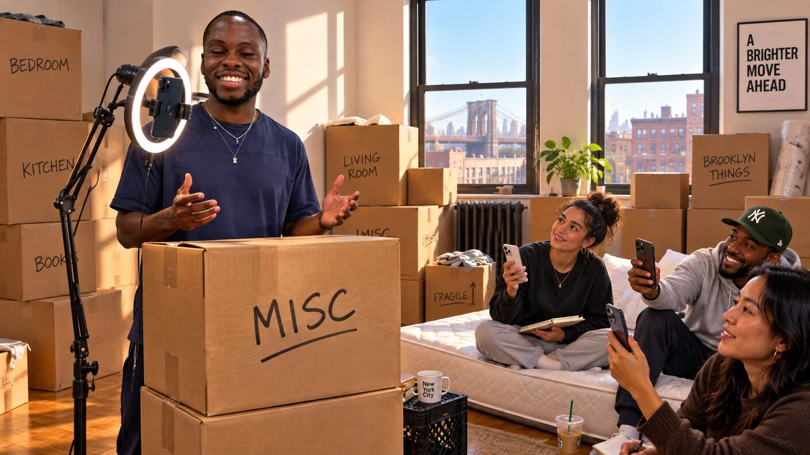
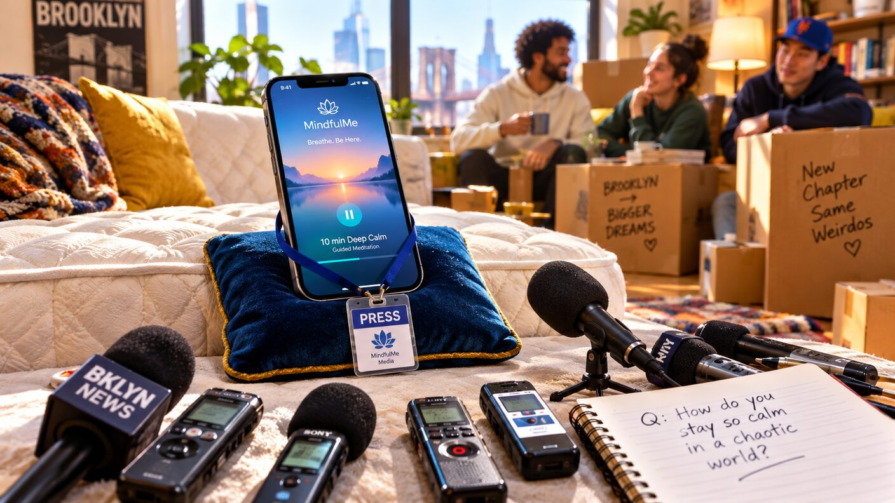
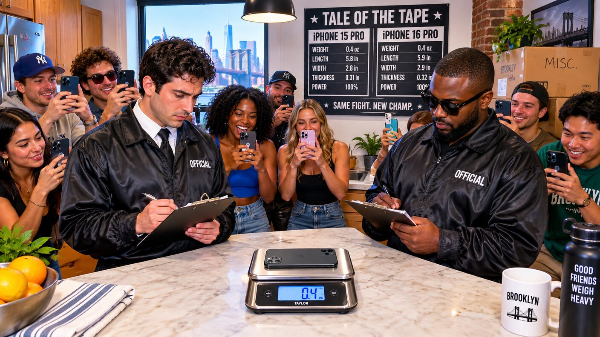

Monday, September 14, 2026 - Day 11 of the slop era
The Weigh-In
Previously, on the longest week in recorded Brooklyn history:
- Mavi ended the rematch by sitting on the keyboard mid-sentence; the game called the unfinished conversation a perfect score. A deciding match is set for Tuesday - Milo's decree, delivered in two words.
- Winnings were paid under a clause the charter calls "ref stoppage." Pool counsel Bryce is still reading the terms, from wherever Bryce currently is.
- Kenny's Rematch Night pay-per-view sold zero tickets (one, refunded - David testing the checkout). The countdown timer counts up. It has not stopped.
Kenny woke on the eleventh day of his developed frontal lobe and checked the timer first. It had crossed twenty-four hours and was now, by his math, the longest continuously running countdown in the space. He posted the screenshot. The screenshot said the event began yesterday.
It was time to promote.

"Media day," he announced in the group chat, "is at Yosh and David's. It photographs raw."
This was true and also the only option. Defne and Lal's had hosted twice and the challenger does not do walkouts in her own living room; Kenny's place was a gym with a bed in it. The new apartment offered authenticity: furniture still boxes, couch still a mattress, and a single box marked MISC in Yosh's handwriting, its entire contents: belts - which Kenny immediately reclassified as the prop table.
Yosh carried the podium box in from the hallway - one box, his traditional allocation - and asked whether media day meant he should wear the good crop top. It did.
David arrived with the champion. streakbearer took its cushion on the mattress-couch, glowing circle up, calendar holding its one recurring event: SIT. David also brought Noon AI's official media strategy, which was Raymond. At 9:14 AM, from the company account, Raymond posted: "Our office is on fire. We kept working. Also, Tuesday. Larry in 2." It was obviously false - the office was not on fire, and Raymond had no line - and it got four hundred likes, which David noted was more distribution than the game itself.

The challenger sent a statement. It was one sentence - "I have read the tapes. He has never read anything. See you Tuesday." - which the pool received as a slight move toward Defne, before someone pointed out that the champion's entire strategy was not reading, and the line moved back.
Kenny ran the weigh-in. He placed streakbearer's phone on the kitchen scale Yosh's frying pan should have been near, if anyone could find the frying pan, which remained under review. "Champion weighs in at point-four pounds," Kenny said, "all of it silence." Larry the Librarian could not be weighed, being a librarian, and also fictional. Kenny recorded both fighters at the same weight and called it even.
Tale of the tape, per the dashboard: the challenger, nine days champion, one crown lost in silence. The champion, undefeated, fifty-three days of streak, zero words. Under REMARKS, the dashboard wrote: "neither party should do this." Kenny screenshotted that too.
The last item was the prediction. Kenny texted Madame Zora to set odds. The reply came back in nine minutes, which for Zora was a press conference: "The cards are escrow." He asked whether that meant Larry. She did not answer, which the pool took as yes, then as no, then as a whole thing.

Afterward, Milo invited everyone to play pool. Defne said no. The invitation was sacred; so was the refusal; the group chat stood for both. Milo looked at the belt box, then at Kenny, and said one word - "No." - which the group chat ruled was not technically a speech but would be forwarded to the relevant committee.
Kenny stayed late to strike the set. Media day metrics: zero accredited press, one LinkedIn post of unknown veracity, a scale reading of 0.4, and the timer, still counting up, now a memorial to an event that had not happened yet. He logged it all as earned media. The dashboard recommended dissolving the concept of media. He called it engagement.
Somewhere across town, on a cushion, near a window, the champion sat. The streak ticked to 54. The cards stayed pocketed. Tuesday kept coming.
no belts were unboxed in the making of this episode